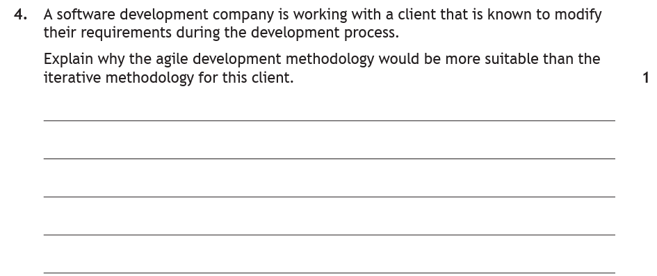
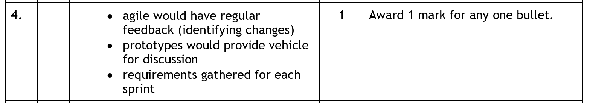
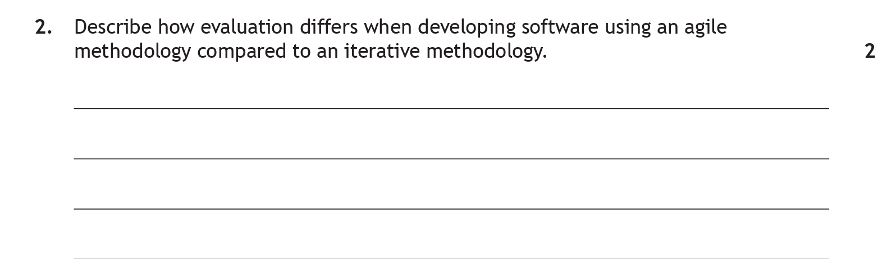
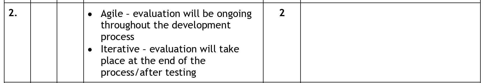

Development Methodologies
A software development methodology is the method used to manage how a software project progresses from stage to stage. It defines how a team plans, builds, tests and delivers software, and how closely the client is involved along the way. No single methodology is "best" — the right choice depends on the size of the project, the team, and how clearly the requirements are understood at the start.
Key Terms
The Software Development Process
Whatever methodology is chosen, a software project moves through the same core phases. The difference between methodologies is largely about the order these phases happen in, how often they are revisited, and how much the client is involved.
| Phase | Purpose |
|---|---|
| Analysis | Understand the problem and agree exactly what the software must do — its purpose, scope, boundaries and functional requirements (inputs, processes, outputs). The output is the software specification. |
| Design | Plan the solution before coding — structure diagrams, flowcharts, pseudocode, wireframes and data flow. Decisions are made about the user interface and how the program will be broken down. |
| Implementation | Write the program code in a chosen language, following the design. |
| Testing | Check the program works correctly and meets the specification, using normal, extreme and exceptional test data. |
| Documentation | Produce supporting material such as internal commentary in the code and a user guide / technical guide. |
| Evaluation | Judge the finished software against the original specification — is it fit for purpose, robust, efficient, readable and maintainable? |
Diagram: Software development process phases — to be added here
The Iterative (Waterfall) Development Process
In the iterative development process the project moves through the phases in a largely sequential order — analysis, then design, then implementation, then testing, and so on. It is often called the waterfall model because work "flows" downwards from one phase into the next. In practice developers do sometimes step back up to an earlier phase when a problem is found, but the project is fundamentally planned in detail at the start and progress is measured against that plan.
- The client is heavily involved at the start (signing off the specification) and at the end (evaluating the finished product), but much less in between.
- The specification is fixed early and changing it later is expensive.
- Separate teams of analysts, programmers, testers and documenters tend to work on each phase, mostly in isolation, handing over to the next phase.
- A detailed project specification, design documents and test plans are created up front.
- Progress is measured against timescales set at the beginning.
- Testing happens after implementation is complete, as a distinct phase.
- It is described as a predictive methodology — it relies on getting the early analysis right and caters for known risks.
A council commissions a payroll system where the rules (tax bands, pension deductions, pay dates) are fixed and fully known in advance. Because the requirements are stable and well understood, the iterative/waterfall process works well — the specification can be locked down, fully documented, built and then tested against clear, unchanging rules.
Diagram: The waterfall / iterative development process — to be added here
Agile Methodology
Agile breaks a project into a series of short development goals called sprints (typically 1–4 weeks). Each sprint involves a cross-functional team doing planning, analysis, design, coding and testing together, and delivers a working prototype or component that the client reviews. The aim is to deliver useful software quickly and to keep adapting it as the client's needs become clearer.
- The client is involved throughout, giving constant feedback on prototypes — and that feedback is acted on quickly, so the software evolves as the project goes on.
- Changing goals during development is seen as a positive, because it leads to a product the client is happier with.
- Developers with different skills collaborate with fast, face-to-face communication, rather than working as isolated teams of experts.
- Documentation is reduced — modelling solutions still matters, but large documents that are never looked at again are avoided. Any documentation (e.g. internal code commentary) should help progress the project.
- Progress is measured by how quickly working prototypes/components are produced, not against a fixed long-term timescale.
- There is no separate testing phase — testing is carried out in conjunction with programming.
- It is described as an adaptive methodology — when the needs of a project change, the team changes with them. It can confidently say what it will do next week, but is deliberately vaguer about dates far in the future.
A start-up builds a new fitness-tracking app and is not yet sure which features users will value most. Using agile, they release a basic working version, watch how people use it, and add or change features sprint by sprint based on real feedback. Large software companies and banks such as Barclays, JP Morgan and RBS use agile for exactly this kind of fast-moving, feedback-driven work.
Comparing Iterative (Waterfall) and Agile
Comparison questions are common in the exam. Be ready to compare the two methodologies across these areas:
| Feature | Iterative / Waterfall | Agile |
|---|---|---|
| Client interaction | Heavily involved at the start and end only | Involved throughout, giving constant feedback on prototypes |
| Teamwork | Specialist teams work in isolation on each phase | Cross-functional teams collaborate with fast, face-to-face communication |
| Documentation | Detailed specification and documents created up front | Reduced — only documentation that helps progress the project |
| Measurement of progress | Against timescales set at the beginning | By how quickly working prototypes/components are produced (sprints) |
| Adaptive vs predictive | Predictive — plans in detail and caters for known risks | Adaptive — changes direction as the project's needs change |
| Testing & Evaluation | Seperate phases, after implementation is complete | Software is tested and evaluated on an ongoing basis throughout development. |
| Best suited to | Fixed, well-understood requirements | Evolving or unclear requirements |
Video: Development methodologies overview — to be embedded here
Practice Questions
This is a standard Development Methodology question from the 2025 Past Paper.

As we are only being asked to Explain why Agile is more suitable, and it is only 1 mark, we don't have to include a comparison to iterative in our answer.
The marking scheme offers 3 options for our answer

Suggested answer
As regular feedback is given to a client in an Agile project, this would allow the client to make changes to the requirements more regularly at these feedback points.
This is a more complex Development Methodology question as it is 2 marks and requires a comparison between Agile & Iterative methodologies.

In this question, we are being asked to Describe, but more importantly describe how evaluation differs during software development for Agile compared to Iterative. That compare means, to get full marks, we need to give 1 point about Agile and 1 point about iterative.
The marking scheme offers 1 point for each methodology

Suggested answer
During development, the project is evaluated on an ongoing basis after each sprint, whereas, in iterative development evaluation takes place at the end of the development process, after the software has been fully developed and tested.